1ª atração
Abre a noite
Lucas Comério
Voz e teclado pra esquentar a praça. É ele quem abre o arraiá, enquanto a fogueira pega e as mesas vão enchendo — a festa começa por aqui.
Sábado, 8 de agosto — a praça é nossa
Uma noite de forró, fogueira e comida boa na Praça do Bosque. Traga a família inteira: a entrada é de graça.
Música ao vivo com Lucas Comério e Cristian & AndersonToda a renda vai para a construção da Igreja Nossa Senhora das Graças, no Riviera.
Faltam
para a fogueira acender
O convite
Todo mundo cabe num arraiá. Os pequenos correndo atrás do cata-vento, os avós garantindo o melhor lugar perto da fogueira, e no meio disso tudo uma sanfona tocando até tarde.
Não tem ingresso, não tem lista, não tem que levar nada além de fome e vontade de dançar. É só chegar.
Te esperamos na fogueira.
O arraiá do ano passado
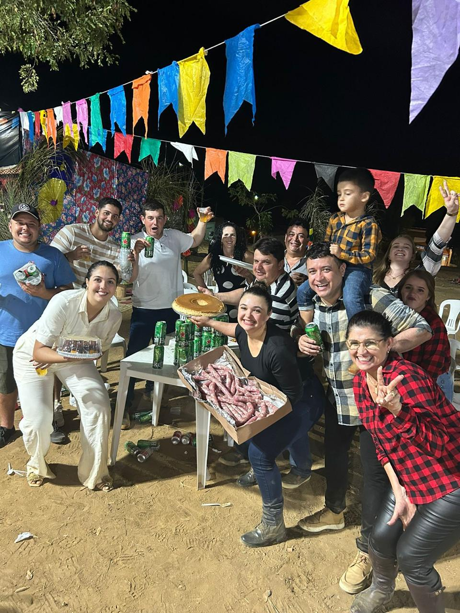
Foi assim ano passado.
A praça cheia até tarde, bandeirinha de ponta a ponta, mesa emendando com mesa. Em 2026 a gente faz de novo — e queremos você numa dessas fotos.
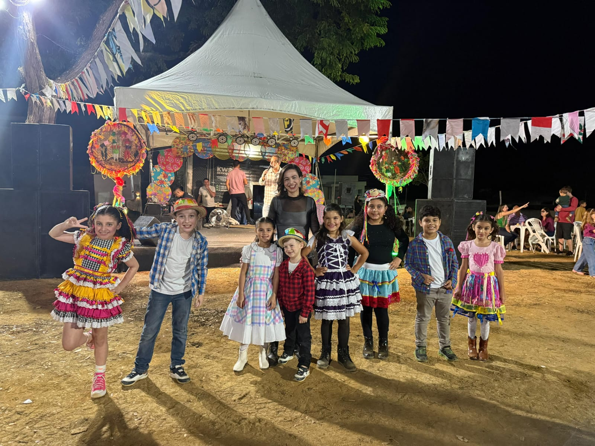
Da fogueira à sanfona
Prato cheio de comida de festa, do salgado ao doce.
Copo quente na mão pra espantar o frio de agosto.
Gelada de verdade, pra quem prefere o contrário.
Gira, torce e leva. A sorte também é atração.
Com o Tio Wilsinho, brincadeira do começo ao fim.
A turma da catequese mostra o que ensaiou.
Olha a chuva! É mentira! Todo mundo na roda.
O ponto de encontro da noite inteira.
Lucas Comério e Cristian & Anderson, na mesma noite.
Duas atrações no palco
O palco não para a noite inteira: são duas atrações na mesma festa, uma emendando na outra, até a praça pedir bis.
1ª atração
Abre a noite
Voz e teclado pra esquentar a praça. É ele quem abre o arraiá, enquanto a fogueira pega e as mesas vão enchendo — a festa começa por aqui.
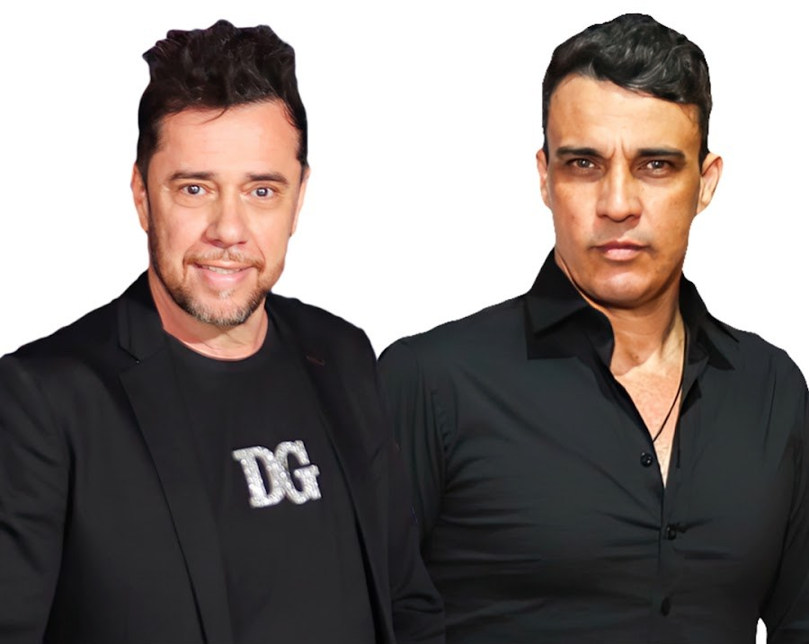
2ª atração
A Pegada do Forró
A dupla assume o palco e a praça vira pista. Forró pra dançar agarrado ou em roda, até a última música — e ninguém vai embora cedo.
Pros pequenos
A Área Kids fica por conta do Tio Wilsinho. Enquanto a criançada brinca, você garante seu lugar na quadrilha — e ninguém vai embora cedo por causa do "mãe, tô entediado".
Por que a festa existe
O Arraiá Riviera é realizado pelos Amigos do Riviera — vizinhos que se juntam, arregaçam a manga e montam a festa do começo ao fim.
Todo valor arrecadado será doado integralmente à construção da Igreja Nossa Senhora das Graças, no Riviera.
Cada copo de quentão, cada prato de comida e cada volta na roleta viram tijolo.
O que vamos construir
Estes são os desenhos da futura Igreja Nossa Senhora das Graças, do jeito que ela vai ficar no Riviera. Hoje é projeto, mas com essa e outras festas da comunidade, a obra vai sair do papel.
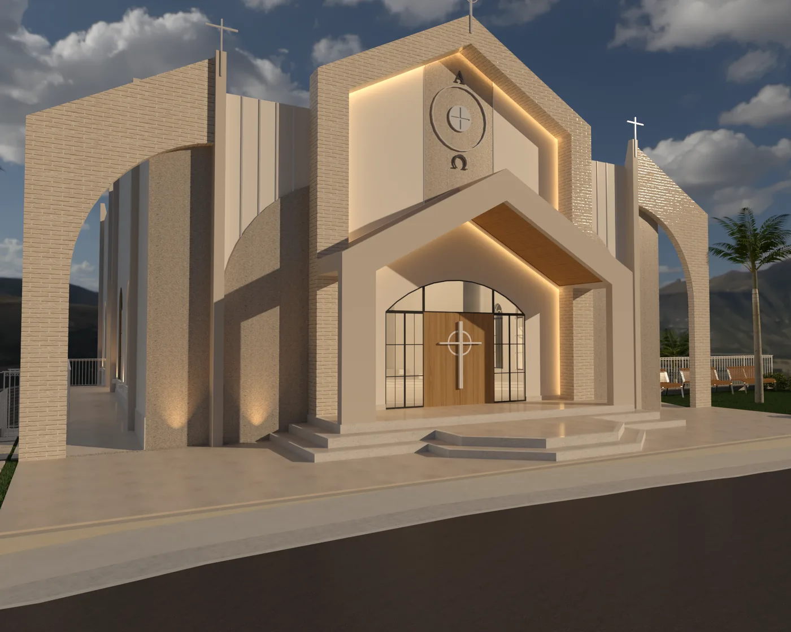
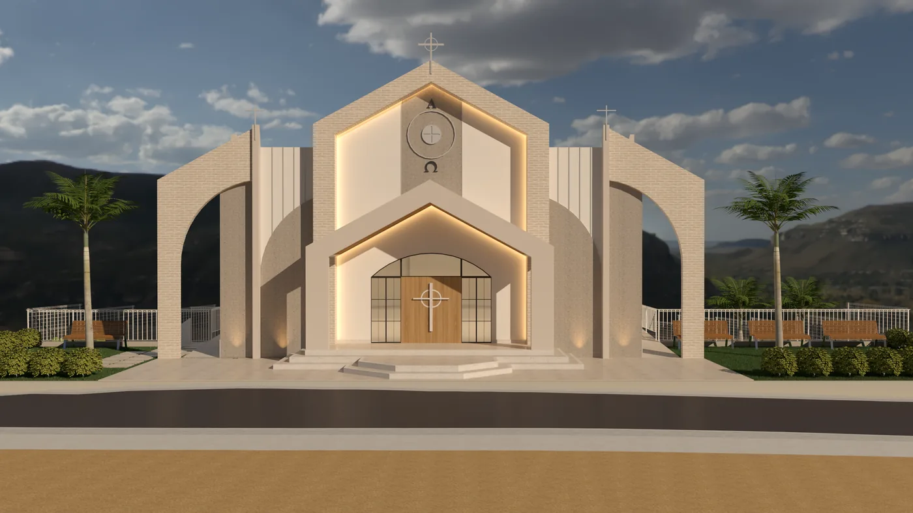
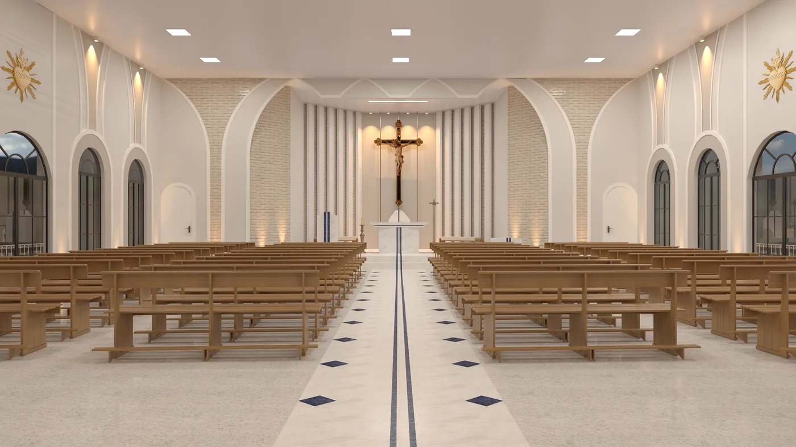
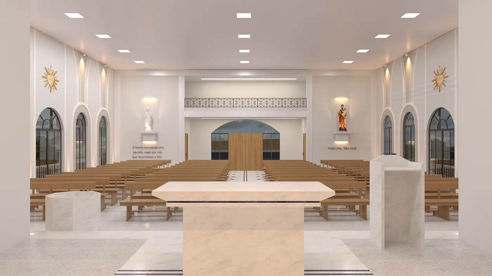
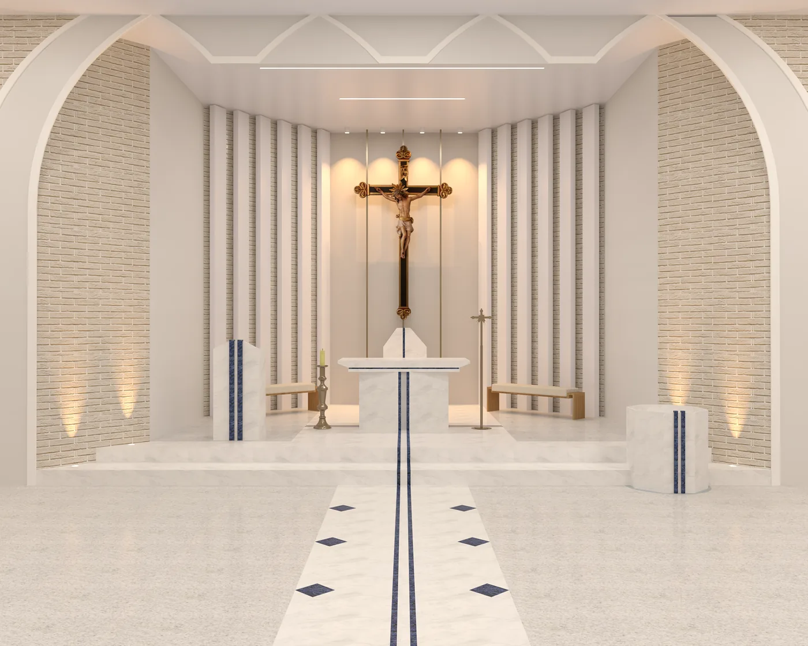
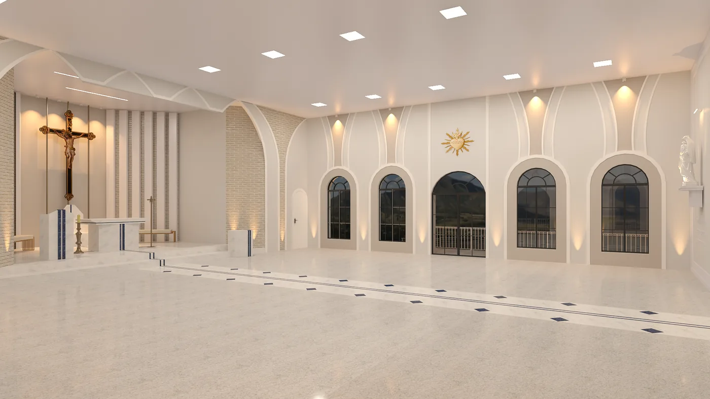
Participe e ajude a concretizar esse projeto de fé.
Obrigado
Antes de qualquer patrocínio, existe gente da comunidade que doa os ingredientes, acorda cedo pra fazer a comida, monta barraca, serve, lava louça e só senta quando o último prato saiu.
A todos os fiéis que dão o que têm e o tempo que não sobra pra esta festa acontecer: obrigado.
Quem ajuda a levantar o arraiá
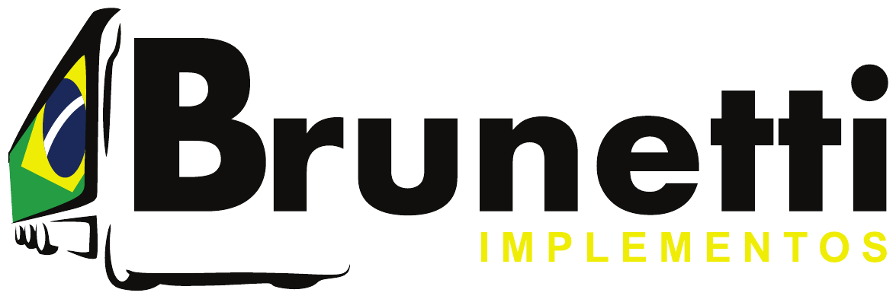
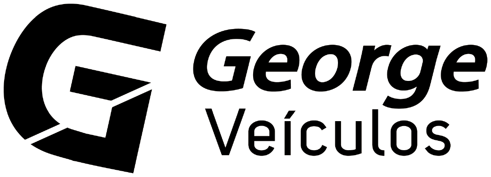
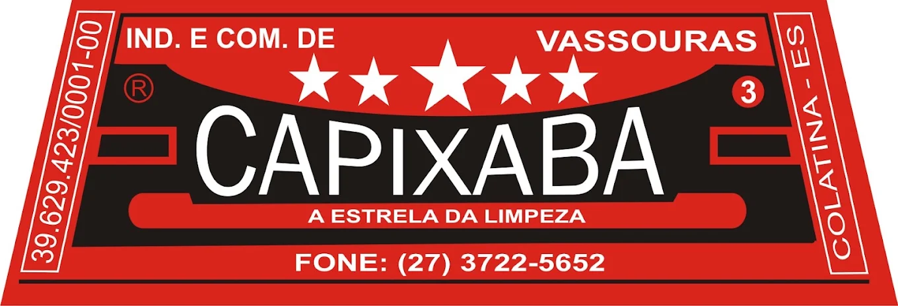
Quer apoiar o arraiá? Fale com os Amigos do Riviera.
Anota aí
Praça do Bosque
Riviera — Colatina/ES